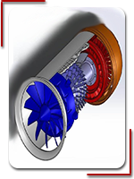
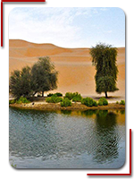

Academician Lin Junde: tackling
Desert cast "nuclear shield
From the explosion of China's first atomic bomb in 1964 to the last underground nuclear test in 1996, China participated
in all 45 nuclear tests. Lin Junde is the head of the development team of nuclear test shock wave instrumentation.
Facing the technological blockade of Western countries
In 1987, Lin Junde successfully applied shock wave measurement technology to routine soldiers. During the weapon
test, he led the project team to develop the acoustic telegraph target technology and the acoustic-electric falling
point positioning
In the 1990s, the study of nuclear test earthquakes, aftershocks detection and their propagation law was initiated,
global seismic data were collected and analyzed comprehensively, and stress wave measurement technology of underground
After he was elected academician in 2001, he took the initiative to undertake the research and development task of
a major defense scientific research experimental equipment. Under the circumstances of great divergence in various
plans, he led the research team to overcome the difficulties of scheme design, engineering
In 2015, Lin Junde, who died of illness in May, continued to work. Academician Lin's life is a perfect combination
of loving the motherland and persistent cause, a perfect

Huang Shengyan: work is constantly
Let the aviation industry take
The first piece of Tianjin-Boeing 737 radome produced by Tianjin Boeing Composites Co., Ltd. (BTC) was delivered
successfully, a month ahead of schedule. This level of manufacturing gives manufacturers a thumbs up and makes
Let more aircraft parts labeled "Made in Tianjin" and have the international first-class aviation manufacturing level,
has been BTC's constant innovation and development of the "driving force". The skin of the plane is only a few millimeters
thick, but the plane can carry 60 to 300 tons of heavy objects to fly into the blue
But now he has become a project leader, leading a group of young people as enthusiastic about aviation as he is,
on projects that allow no error at all. The successful delivery of every product requires
Made in China 2025, issued in 2015, defines nine strategic tasks and priorities, and puts forward eight strategic
support and guarantee. It proposes to vigorously promote breakthroughs in the development of the ten key areas
As a joint venture between Boeing and China Aviation Industry Group in Tianjin, BTC has reached the production level
of one million pieces in just 16 years. At present, BTC has more than 1000 employees and hundreds of suppliers

China's engine development is to
Study ahead one generation
The good news about the domestic engine turbofan 15 is endless. Firstly, we have conquered the related technical
difficulties. Then, China has successfully broken the technical blockade on the key parts of this aircraft abroad,
and manufactured
Today, China has succeeded in overcoming the material problems that have plagued
Aeroengine is a kind of technology that classical mechanics approaches the limit in engineering application, and
it has extraordinary difficulty. Specifically speaking, aero-engine is a kind of thermal machinery
Around the world, only Ro Rowe, Pratt & Whitney and General Motors of the United States have mastered the first-class
manufacturing technology of turbofan engines. Russia and France are second-class, which is a real monopoly industry.
Startups like Horizon are able to develop their own AI chips, proving that domestic chips are progressing in design.
The aforementioned experts from the Beijing Institute of Higher Education also said that the domestic chip is not
only a technical

The world's first quantum scient
Everything is ready except
Ten years, five years. Although the project was initiated in 2011, China has been on the road for more than 10 years
if the technical reserve is started. With the rise of quantum communication and quantum computing, physicists around
the world
While most people are still devoted to demonstrating the principles inside the laboratory, Pan Jianwei's team at
the University of Science and Technology of China has begun to think about how quantum information can be transmitted
in
In 2005, Pan Jianwei's team carried out experiments on quantum entanglement and key distribution in 13 kilometers
of free space, confirming that the quantum states of photons can be effectively maintained after they penetrate
the
With the support of innovative projects, Pan Jianwei's team has realized 16 kilometers of quantum teleportation in
free space, and has cooperated with Shanghai Institute of Technology and Physics, Shanghai Microsatellite Engineering
A series of key technologies of free space quantum communication have been developed. Important experiments such
as 100 km free space quantum communication and omni-directiona

Major breakthrough in key te
Open a new journey
Recently, China has made major breakthroughs in key technologies of space equipment. China has successfully launched
a hard X-ray modulated telescope
Even more surprising is that China has cracked the key technology of space crash satellite capture, and is at the
forefront of the world in clearing space debris. This is the cover of the American magazine Science, Mozi, which
sends two beams of
The United States believes that China can use this technology to clean up space debris, so long it is possible to
clean up the normal satellites of the United States, which is highly dependent on satellites for the United States
is inconceivable
It has been stressed many times that China will not find its satellite as long as it does not infringe on China's
interests. Why should the United States worry? Entering the new century, China has stepped into the top ranks of
the world in
We must not forget, and never forget, this history of suffering. The Chinese people must strive harder to build our
motherland better and stronger.

No more sand can come back
"Artificial oasis" in the
Entering the Ulan cloth desert, the first person to speak is Xue Feibin. "Sand is sand. How can it become a soil?"
Placed in a sunflower field, the stem was full of one person. He reached back and down with his hands on his head.
At present, the planting area of 4200 mu, planting nearly 100 kinds of crops, weeds are all alive, frogs, butterflies,
sparrows and other birds and insects also settled
Go all the way, chew all the way, watermelon, tomato, green onion, alfalfa, sweet potato, buckwheat, corn... Once
deserted, the desert will grow with vegetation. Xue Feibin's contribution to the project includes not only time
In just over half a year, he told Xinhua. com, the changes here are very big. The new technology of the scientific
research team of Chongqing Jiaotong University has been well known in many Gacha around the demonstration area.
According to incomplete statistics, there were nearly 80 farmers and herdsmen working in the pilot base of Ulanbu
and "desert soil"